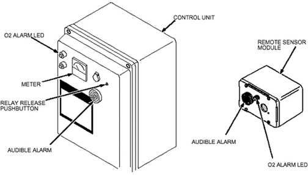

Meter reading on the Control Unit should decrease to approximately 17%.
Audible alarm should sound on the Control Unit and the Remote Sensor Module.
Red alarm LED should blink on the Control Unit and the Remote Sensor Module.
Illustration 28: Oxygen Monitor Subsystem Alarms and Relay Release Pushbutton
